CMP06 — NPS vs PPF vs EPF: Retirement Ke Liye Paisa Kahan?
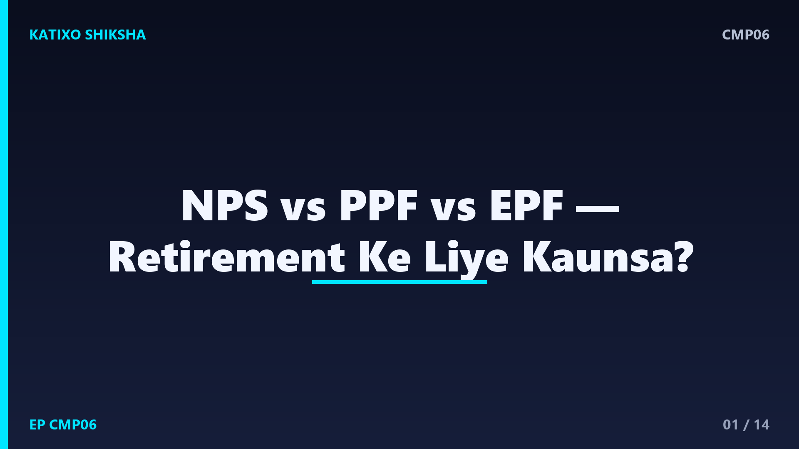
Slide 1दोस्तों, जब बात retirement की बचत की आती है, तो तीन नाम बार-बार सुनाई देते हैं — NPS, PPF और EPF. तीनों लंबे समय की बचत के लिए हैं, तीनों पर सरकारी छाप है, पर तीनों अलग तरीक़े से काम करते हैं। फिर बुढ़ापे के पैसे के लिए कौनसा सही है? बहुत लोग यहाँ confuse हो जाते हैं। Katixo KhojLab की इस comparison episode में हम तीनों को आसान भाषा में समझेंगे, फ़ायदे-नुक़सान देखेंगे, और बताएँगे किसके लिए क्या सही है। ध्यान दें — ये general info है, financial advice नहीं।
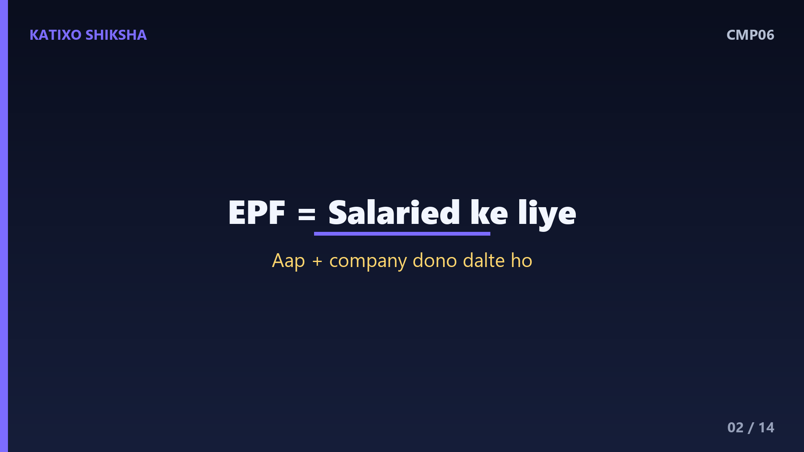
Slide 2पहले EPF समझते हैं, जो नौकरी करने वालों का साथी है. EPF यानी Employees' Provident Fund — ये ज़्यादातर salaried यानी नौकरीपेशा लोगों के लिए होता है। हर महीने आपकी salary से एक हिस्सा कटता है, और उतना ही हिस्सा आपकी company भी जमा करती है। यानी आपके साथ-साथ company भी आपके retirement में योगदान देती है। इस पर सरकार हर साल एक तय ब्याज देती है, जो काफ़ी अच्छा और सुरक्षित माना जाता है। ये अपने आप, हर महीने जमा होता रहता है, इसलिए बचत की आदत बिना मेहनत बन जाती है।
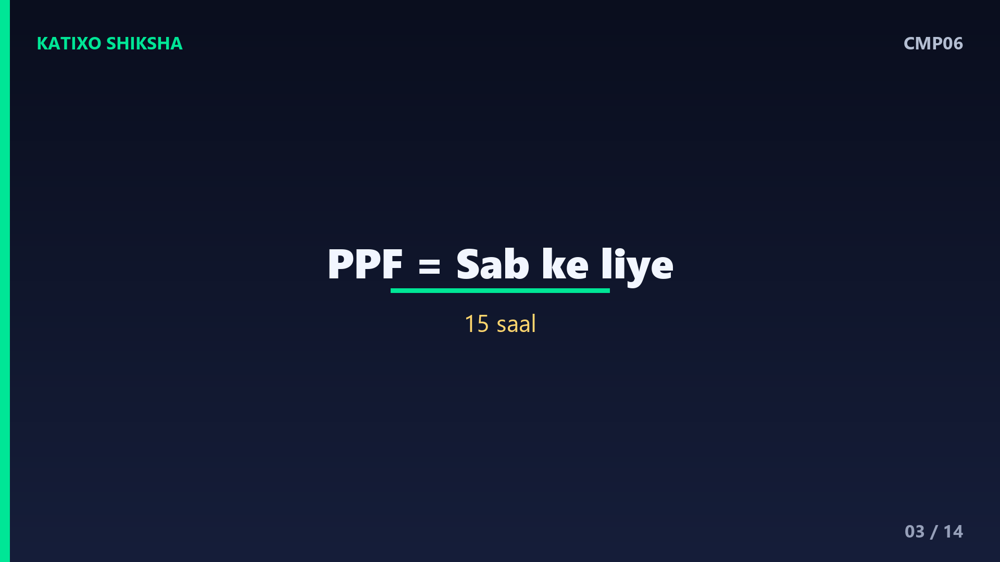
Slide 3अब PPF समझो, जो हर किसी के लिए खुला है. PPF यानी Public Provident Fund — इसे कोई भी खोल सकता है, चाहे नौकरी करता हो, business करता हो, या housewife हो। ये पंद्रह साल की लंबी योजना है, जिसमें आप साल में एक तय रक़म तक जमा कर सकते हो। इस पर सरकार एक तय ब्याज देती है, और सबसे ख़ास बात — ये पूरी तरह सरकारी गारंटी वाला और बहुत safe है। बाज़ार ऊपर-नीचे जाए, आपके PPF पर कोई फ़र्क़ नहीं पड़ता। शांति चाहने वालों के लिए ये बढ़िया है।
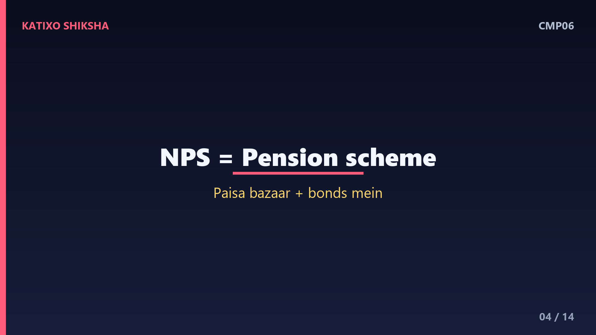
Slide 4अब NPS समझो, जो थोड़ा अलग और आधुनिक है. NPS यानी National Pension System — ये सरकार की चलाई एक pension योजना है, जिसे कोई भी जोड़ सकता है। इसमें आपका पैसा कुछ हिस्सा शेयर बाज़ार और कुछ bonds में लगता है, इसलिए इसका return पहले से तय नहीं — बाज़ार पर निर्भर करता है। यानी लंबे समय में ज़्यादा बढ़ने की संभावना, पर थोड़ा जोखिम भी। retirement पर इसका एक हिस्सा आपको cash में मिलता है, और बाक़ी से नियमित pension बनती है। ये बाज़ार से जुड़ा होने के कारण बाक़ी दोनों से अलग है।
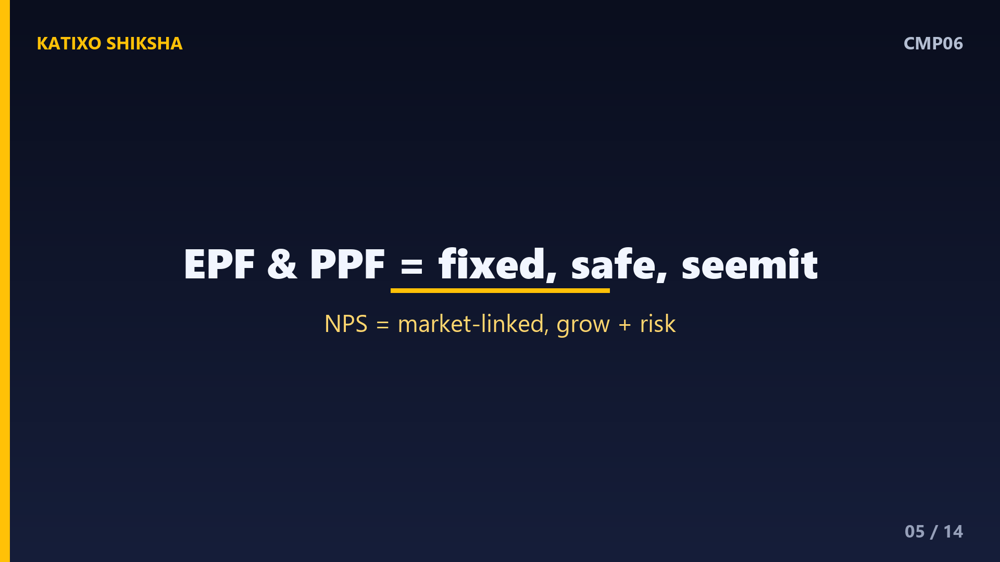
Slide 5अब सबसे बड़ा फ़र्क़ — return और जोखिम का. EPF और PPF दोनों में return सरकार तय करती है — सुरक्षित और पहले से पक्का, पर सीमित। NPS में return तय नहीं, क्योंकि पैसा बाज़ार में लगता है — लंबे समय में आम तौर पर ज़्यादा बढ़ने की संभावना, पर बीच में घट-बढ़ भी सकता है। यानी EPF और PPF देते हैं शांति और निश्चितता, और NPS देता है बढ़ने का बड़ा मौक़ा, बदले में थोड़ा जोखिम। यही तीनों के बीच की असली रेखा है।
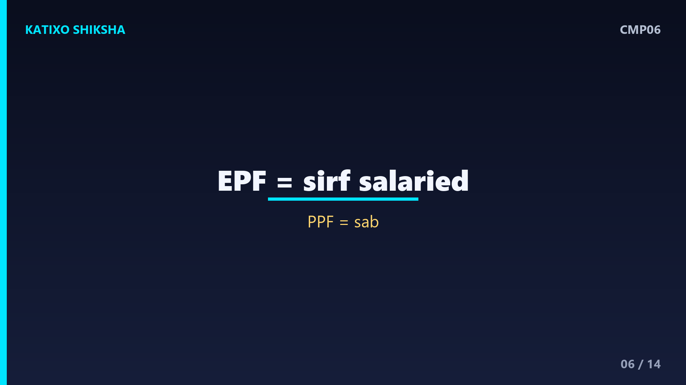
Slide 6अब कौन खोल सकता है, ये साफ़ करते हैं, क्योंकि यहीं से चुनाव शुरू होता है. EPF सिर्फ़ नौकरीपेशा लोगों के लिए है, और अक्सर अपने आप salary से कटकर बनता है। PPF हर किसी के लिए खुला है — नौकरी, business, या बिना आमदनी वाले भी इसे खोल सकते हैं। NPS भी लगभग हर किसी के लिए खुला है, चाहे आप कुछ भी काम करते हों। तो अगर आप self-employed या business वाले हो और EPF नहीं है, तो PPF और NPS आपके दो बड़े रास्ते बनते हैं।
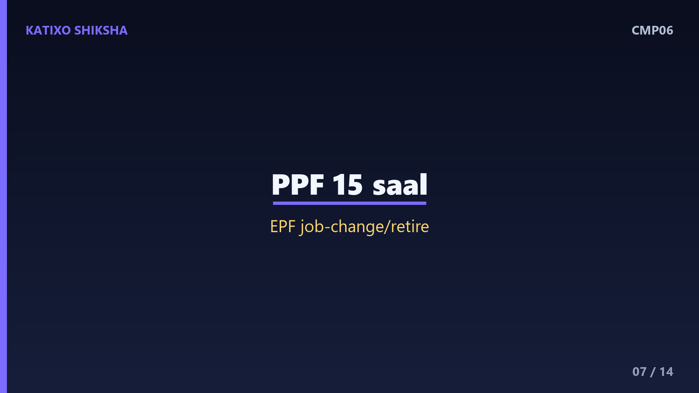
Slide 7अब lock-in यानी पैसा कब निकलेगा, ये बहुत ज़रूरी है. PPF पंद्रह साल की योजना है, हालाँकि कुछ साल बाद सीमित निकासी की छूट मिलती है। EPF आम तौर पर तब निकलता है जब आप नौकरी छोड़ो या retire करो, कुछ ख़ास हालात में पहले भी कुछ हिस्सा निकाला जा सकता है। NPS मुख्य रूप से साठ साल की उम्र तक का है — retirement पर एक हिस्सा cash, और बाक़ी से pension। यानी तीनों लंबे समय के लिए हैं, बीच में पैसा निकालना आसान नहीं — और यही इनकी ताक़त भी है।
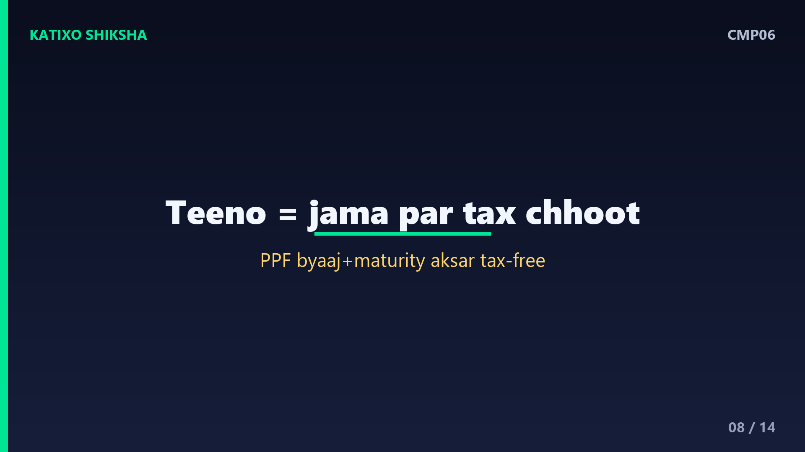
Slide 8अब tax का पहलू, जो इन्हें ख़ास बनाता है. तीनों में जमा की गई रक़म पर अक्सर tax में छूट मिलती है, जिससे ये बचत और भी आकर्षक बन जाती है। PPF का ब्याज और अंत में मिलने वाली रक़म आम तौर पर tax-free मानी जाती है, जो इसकी बड़ी ताक़त है। EPF भी कुछ शर्तों के साथ tax में फ़ायदा देता है। NPS पर भी जमा पर छूट मिलती है, पर निकासी के नियम थोड़े अलग हैं। टैक्स के नियम समय-समय पर बदलते हैं, इसलिए निवेश से पहले current नियम ज़रूर check करें।
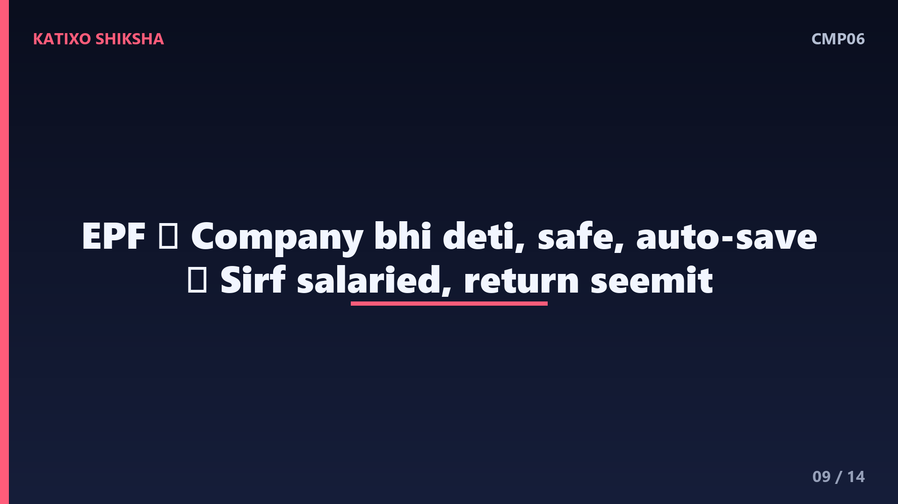
Slide 9अब EPF के फ़ायदे और नुक़सान. फ़ायदे — company भी योगदान देती है, सुरक्षित और तय ब्याज, और अपने आप जमा होता रहता है इसलिए बचत बिना सोचे बन जाती है। नुक़सान — सिर्फ़ नौकरीपेशा लोगों के लिए, और return सीमित होता है। तो EPF salaried लोगों के लिए एक मज़बूत, बिना झंझट वाली नींव है — पर अकेले इसी पर निर्भर रहना अक्सर काफ़ी नहीं, क्योंकि बढ़ती ज़रूरतों के लिए और बचत भी चाहिए।
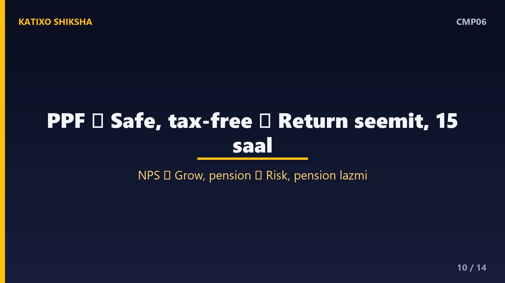
Slide 10अब PPF और NPS के फ़ायदे-नुक़सान. PPF के फ़ायदे — पूरी तरह safe, tax में बढ़िया फ़ायदा, हर किसी के लिए खुला; नुक़सान — return सीमित और पंद्रह साल का लंबा lock-in। NPS के फ़ायदे — लंबे समय में ज़्यादा बढ़ने की संभावना और pension की सुविधा; नुक़सान — return बाज़ार पर निर्भर, और retirement पर एक हिस्से से pension लेना ज़रूरी होता है, इसलिए पूरा पैसा एक साथ हाथ में नहीं आता। यानी PPF देता है निश्चितता, NPS देता है growth का मौक़ा।
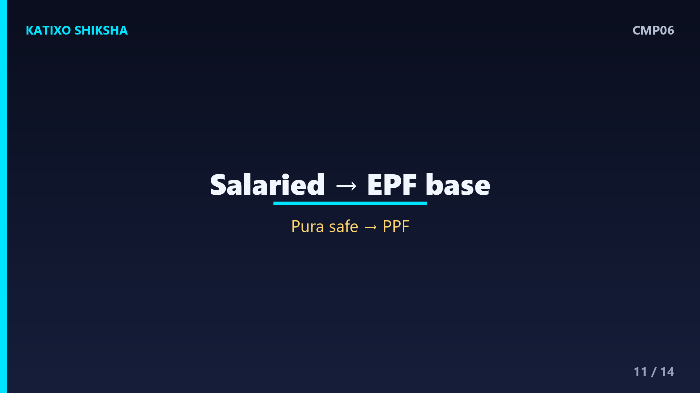
Slide 11तो किसके लिए क्या सही? अगर आप नौकरीपेशा हो, तो EPF आपकी मज़बूत नींव है — उसे चलने दो। अगर आप पूरी सुरक्षा और tax-free बढ़त चाहते हो, और जोखिम बिल्कुल नहीं ले सकते, तो PPF बढ़िया है। और अगर आप लंबे समय में थोड़ा जोखिम लेकर ज़्यादा बढ़त और pension चाहते हो, तो NPS पर विचार करो। ख़ासकर self-employed लोगों के लिए, जिनके पास EPF नहीं, PPF और NPS का मेल एक अच्छा रास्ता बन सकता है।
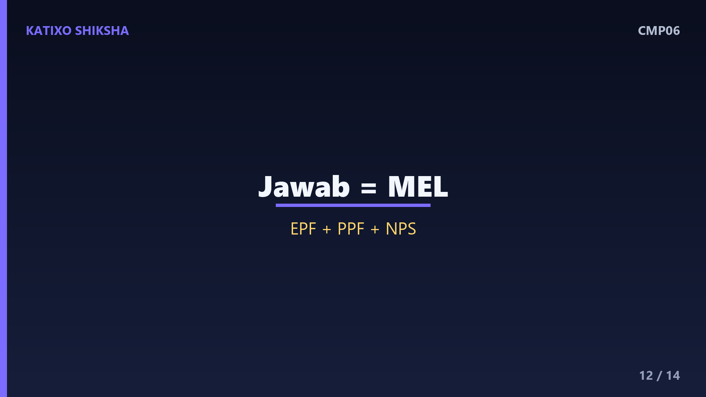
Slide 12एक समझदारी की बात — ये लड़ाई या-या की नहीं है. ज़्यादातर लोगों के लिए सही जवाब है — मेल। नौकरीपेशा के पास EPF तो अपने आप है; उसके ऊपर PPF से सुरक्षित, tax-free हिस्सा, और NPS से बाज़ार वाला बढ़त का हिस्सा जोड़ा जा सकता है। इस तरह सुरक्षा और growth, दोनों का संतुलन बनता है। सबसे ज़रूरी बात — retirement की बचत जितनी जल्दी शुरू करोगे, compounding की ताक़त से उतना ज़्यादा पैसा बनेगा। देर करना ही सबसे बड़ा नुक़सान है।
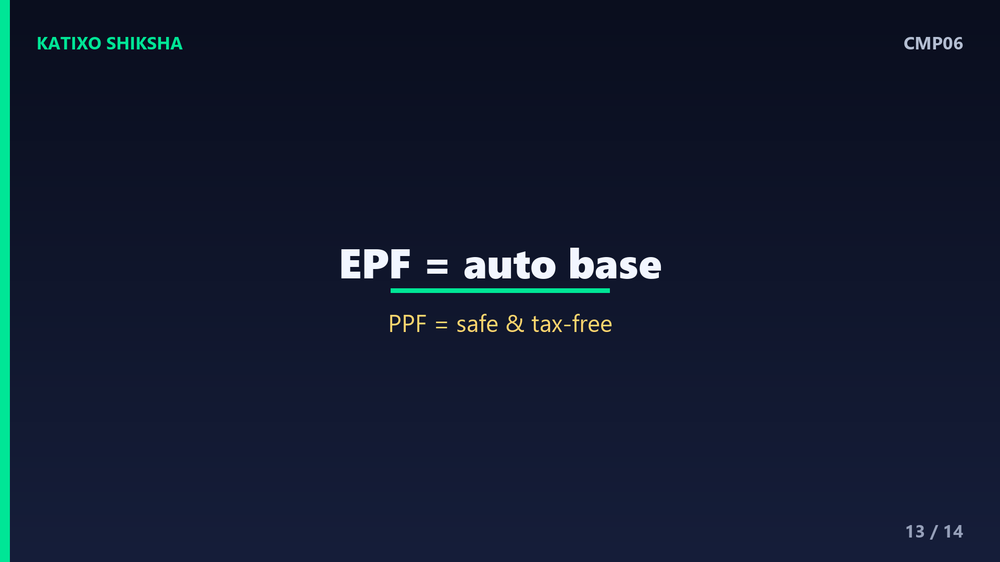
Slide 13एक quick recap. EPF — नौकरीपेशा के लिए, company भी योगदान दे, safe और auto। PPF — सबके लिए, पूरी तरह safe, tax-free, पर return सीमित। NPS — बाज़ार से जुड़ा, ज़्यादा बढ़त का मौक़ा और pension, पर जोखिम के साथ। तीनों long-term retirement के लिए शानदार हैं, और अक्सर इनका मेल सबसे अच्छा रहता है। और हमेशा याद रखो — जल्दी शुरू करना, और अपने लक्ष्य व जोखिम सहने की क्षमता के हिसाब से चुनना, यही असली समझदारी है।
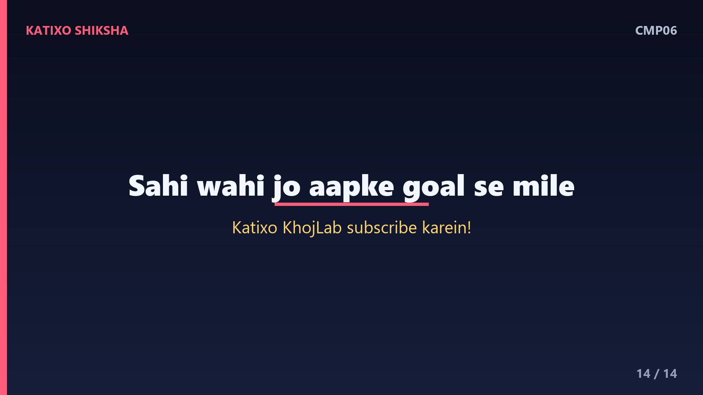
Slide 14तो दोस्तों, अब NPS, PPF और EPF का पूरा फ़र्क़ साफ़ है, और अगली बार कोई पूछे तो आप समझदारी से जवाब दे पाओगे। याद रखो — कोई भी option अपने आप में अच्छा या बुरा नहीं, सही वही है जो आपके लक्ष्य और जोखिम से मेल खाए। अगर ये comparison काम आया तो Katixo KhojLab subscribe karein, घंटी दबाएँ, और परिवार-दोस्तों के साथ share करें। और एक बार फिर — ये general info है, financial advice नहीं, अपने पैसे का फ़ैसला सोच-समझकर या किसी जानकार से सलाह लेकर करें। मिलते हैं अगली episode में।